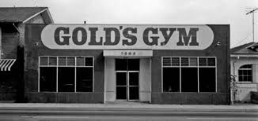
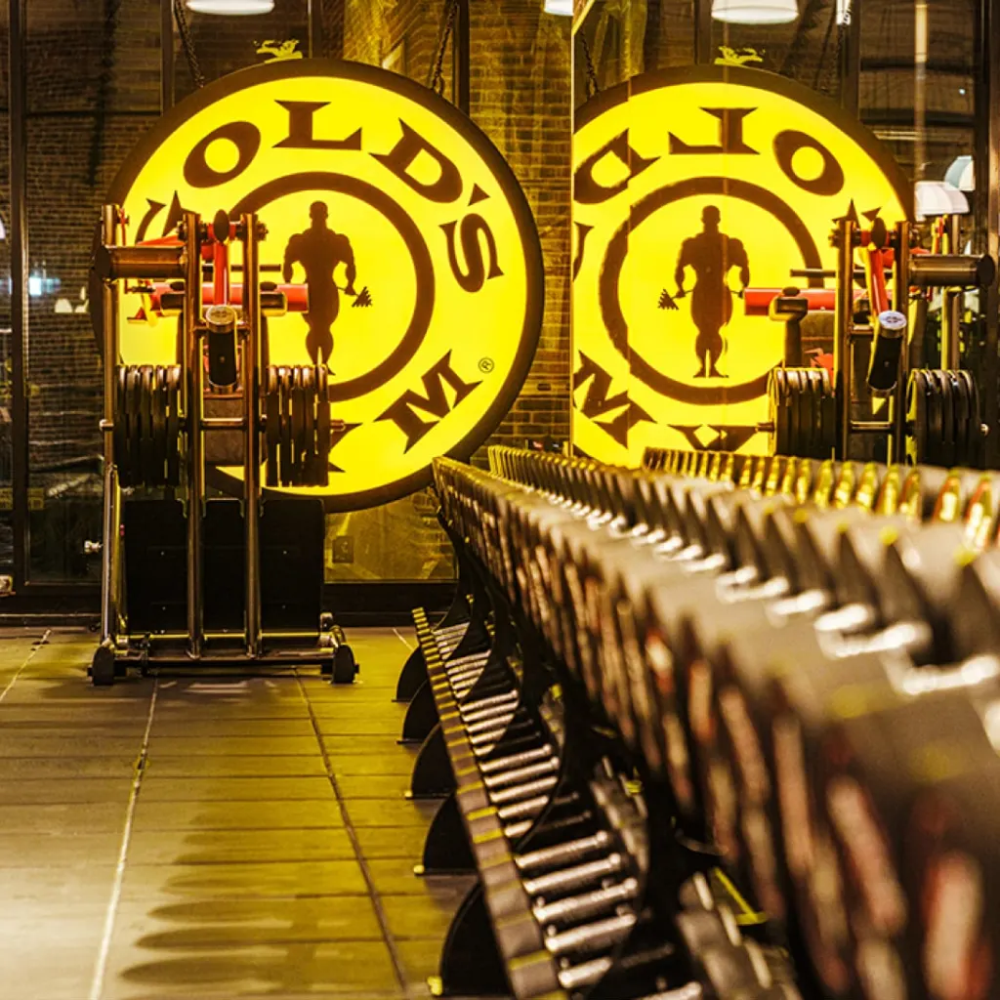

SWOT Analysis
Strenghts
Gold's Gym has a strong global presence and is recongnized as a pioneeer in the fitnes industry since 1965. The gym offers a wide range of services, including personal training, group classes, and specialized programs, catering to various fitness levels. Highly trained and experienced personal trainers and fitness instructors enhance the customer experience and outcomes. Gold's Gym has built a loyal community of fitness enthusiasts, fostering motivation and support among others.
Weaknesses
Some potentional customers may view membership costs as expensive compared to local fitness alternatives. Memebership agreements can sometimes have long-term commitments, which may deter potential members. Franchise locations may vary in terms of equipment quality and customer service, affecting brand consistency. Popular locations can experience overcrowding, leading to negative workout experience during peak hours.
Opportunities
There is potential for Gold's Gym to enter emerging markets and undeserved locations, increasing membership base. Developing an online platform for virtual classes and training programs can attract a broader audience, especially post-pandemic. Collaborating with health and wellness brands can enhance offerings and attract new members. Capitalizing on the growing trend of holistic health and wellness can lead to the introduction of new programs, such as nutrition coaching and mental health support.
Threats
The fitness industry is highly competitive, with many gyms, boutique studios, and home workout solutions vying for market share. Economic challenges can lead to reduced discretionary spendning, affecting gym memberships and retention rates. A shift toward home workouts and virtual training options may impact tradtional gym attendance. Ongoing health regulations and potential lockdowns can disrrupt operations and limit member engagemnent.